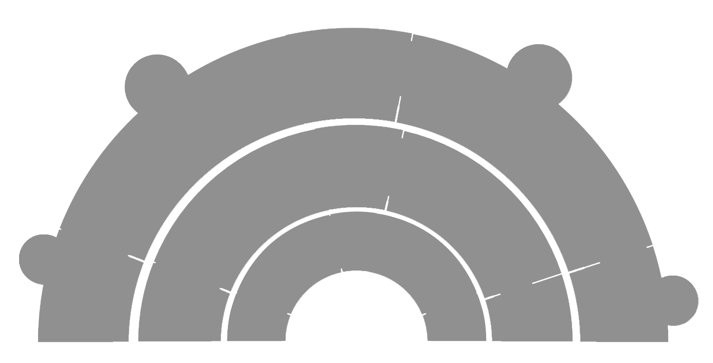
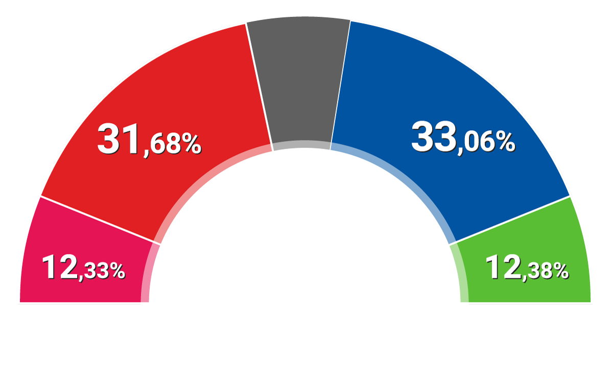
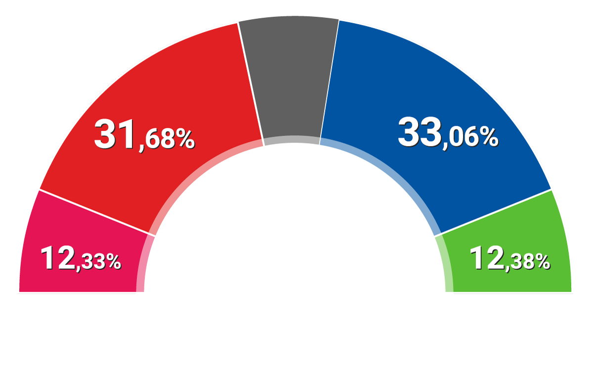

Barómetro del CIS
Estimación de voto para las elecciones generales
(en % de voto válido)
Abr
Abr nuevo



 


Partido 1: dato
Partido 2: dato
Partido 3: dato
Partido 4: dato
Partido 5: dato
Partido 6: dato
Partido 7: dato
Partido 8: dato
Partido 9: dato
Partido 10: dato
Partido 11: dato
Partido 12: dato
Partido 13: dato
Partido 2: dato
Partido 3: dato
Partido 4: dato
Partido 5: dato
Partido 6: dato
Partido 7: dato
Partido 8: dato
Partido 9: dato
Partido 10: dato
Partido 11: dato
Partido 12: dato
Partido 13: dato